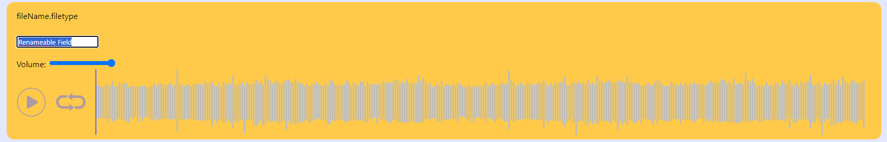

Load Content onto the webpage via drag and drop or the open file button at the bottom of the page.
Double tap into the renameable field, edit the field, then press enter again to submit the field changes.
Use the volume control to turn the audio up or down depending on the current environment your party is in.
Use the play/pause button to start and stop the audio. Use the loop button to loop the audio automatically.
Use the audio scrubber to skip any unwanted parts or find a specific part of the audio you want (Useful for when there's a BBEG fight and the music just HAS to be right).